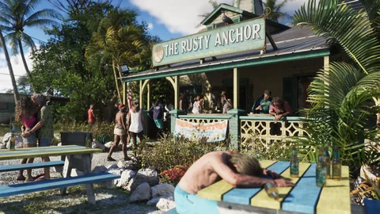

Lieux · GTA VI
Les régions de Leonida
Des Keys aux quartiers de Vice City, découvre les régions présentées par Rockstar et les liens entre leurs paysages, leurs habitants et l’histoire.
Ouvre une fiche pour retrouver ses médias et ses repères sur la carte. Les descriptions officielles sont distinguées des localisations communautaires ; la présence d’un lieu ne confirme pas un accès libre dans le jeu. Comprendre les statuts.




Vice City
La capitale du soleil et de la démesure, loin des années 80 mais toujours aussi affamée.
Vice City réunit plages, quartiers commerçants, port de croisière et gratte-ciel de Downtown. Rockstar cite Ocean Beach, Little Cuba, Tisha-Wocka et VC Port, et en fait la zone la plus dense et la plus vivante de Leonida.
Voir la fiche
Leonida Keys
Un chapelet d’îles où l’on vit de la mer, de la pêche et de trafics discrets.
Un archipel tropical relié par de longues routes au-dessus de l'eau. On y vit de la pêche, des bars de bord de mer et de trafics discrets : Jason y habite dans une propriété de Brian Heder, dont le chantier naval fait encore passer de la marchandise.
Voir la fiche
Grassrivers
Les marais sauvages de Leonida, où l’alligator est l’attraction la plus célèbre.
La plus vaste étendue sauvage subtropicale du pays : mangroves, canaux lents et plaines inondées que l'on parcourt en hydroglisseur. Rockstar en fait le joyau indompté de Leonida, aussi beau que dangereux.
Voir la fiche
Port Gellhorn
Une station balnéaire fanée, entre motels bon marché et attractions fermées.
Ancienne destination de vacances, Port Gellhorn vit aujourd'hui de ce qu'il en reste : motels bon marché, centres commerciaux vides et attractions fermées. Un endroit où se faire oublier et accepter les boulots dont personne ne veut.
Voir la fiche
Ambrosia
Le cœur industriel de l’État, où l’industrie américaine et les vieilles valeurs règnent encore.
Le versant agricole et industriel de Leonida, organisé autour de la raffinerie sucrière Allied Crystal. Elle fournit les emplois ; un gang de motards local fournit, selon Rockstar, à peu près tout le reste.
Voir la fiche
Mount Kalaga National Park
De l’air sur la frontière nord : chasse, pêche et pistes tout-terrain.
Le parc national du nord de Leonida : forêts, reliefs, rivières et pistes boueuses. Rockstar le présente comme un terrain de chasse, de pêche et de tout-terrain, loin des villes.
Voir la ficheContinuer la visite


Et après ?
La suite s'écrit le 19 novembre 2026.
Chaque fiche se complète avec le jeu : ce qu'on y trouve, ce qu'on y fait, ce que ça rapporte. Rien d'inventé d'ici là.